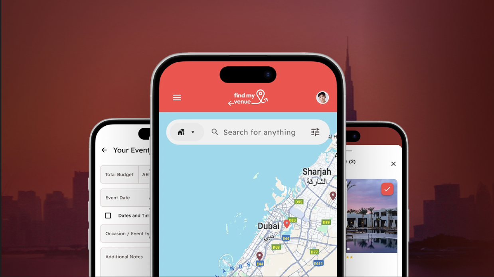
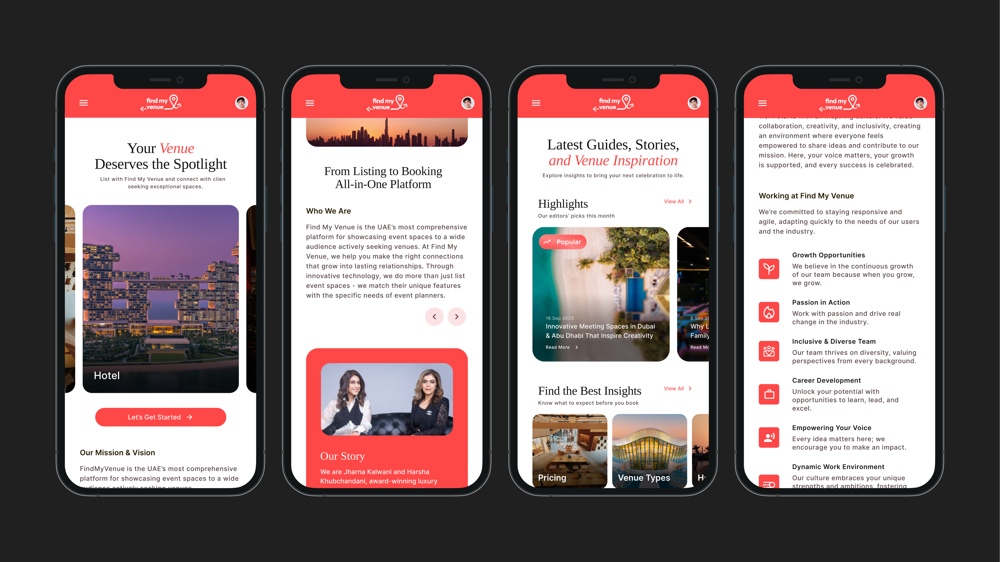
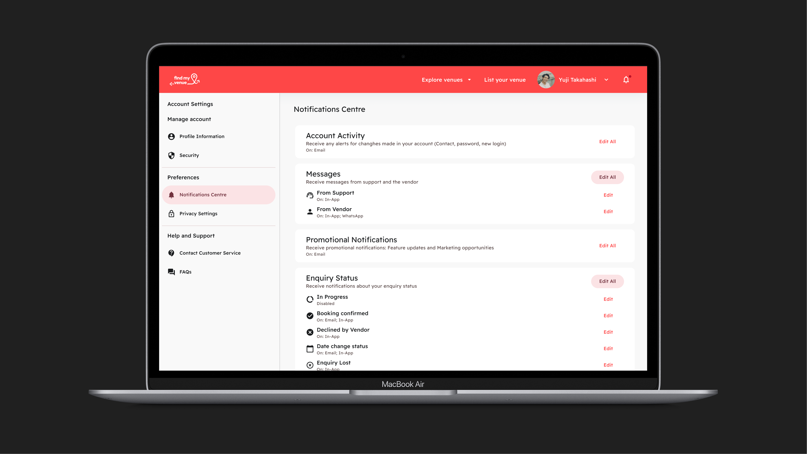
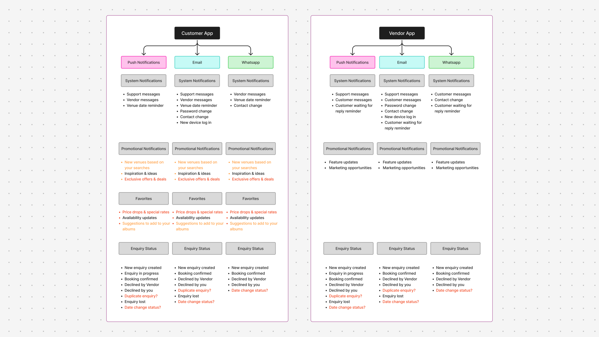
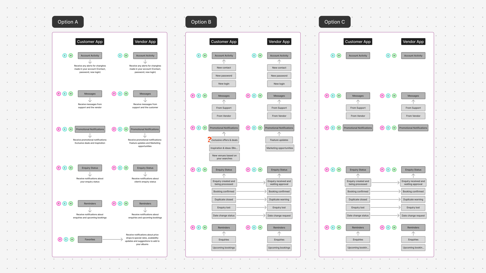
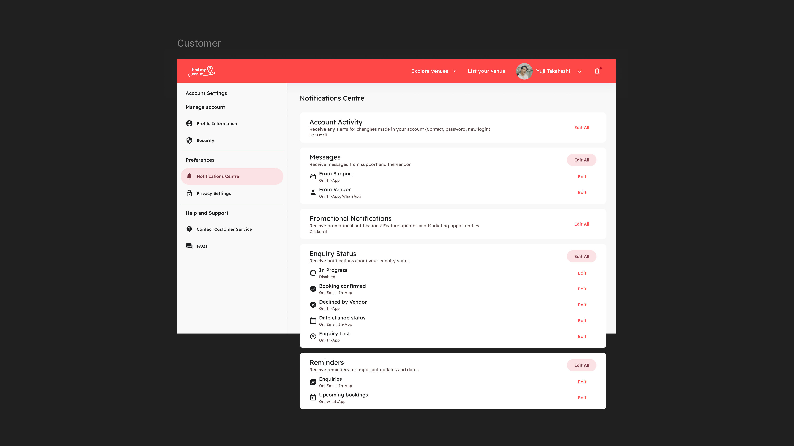
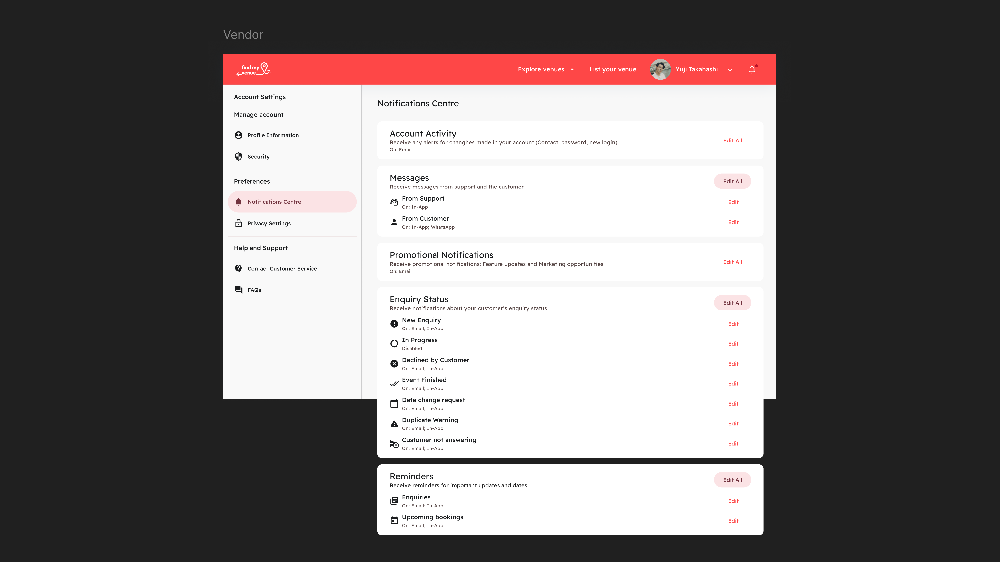
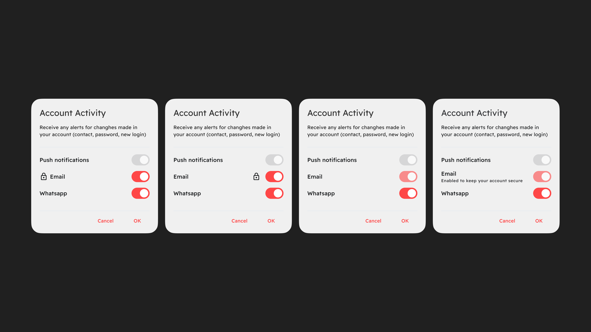
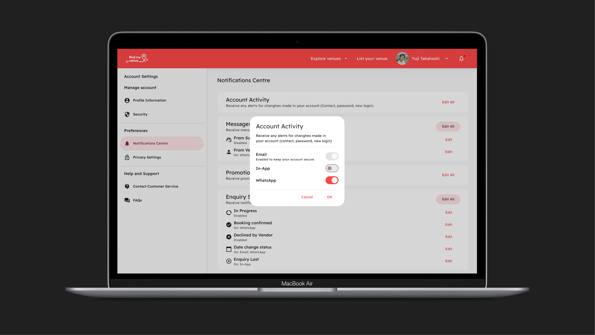

Find My Venue is a platform for discovering and booking event spaces across the UAE, from hotel ballrooms and restaurants to rooftops and private venues. Customers can browse, compare and send enquiries to several venues at once, while vendors list their spaces and manage requests in one place.
I worked on the UI and motion across the web and mobile experience, shaping a visual language that feels premium but stays clear and easy to use. I also led the UX and UI of the Notification Center, designing how both customers and vendors stay informed without being overwhelmed.

The goal for this project was to make searching for a venue feel as inspiring as the events themselves. Rich imagery, a warm red palette and elegant serif accents give the brand a sense of occasion, while a clean structure keeps browsing, comparing and enquiring simple. Motion adds a layer of detail: smooth transitions and interactive cards guide users through the experience and make the platform feel alive.

Find My Venue talks to two very different users, customers planning events and vendors managing bookings, across three channels: push, email and WhatsApp. I designed the notification system from the flow to the final UI, with one goal: give people control over what reaches them without making them manage dozens of switches.

I started by listing every notification each app could send and splitting them by channel and type: system, promotional, favourites and enquiry status. Items marked in orange were open questions for the team, such as whether duplicate enquiries or date changes needed their own alert.


The final structure combines C’s simplicity with B’s detail where it matters. Account activity and promotions stay as single settings, while messages, enquiries and reminders can be adjusted per event, because those are the alerts people actually act on.
Customers and vendors share the same five categories, but each version speaks from their side of the booking. A customer sees Declined by Vendor and Date change status while a vendor sees Declined by Customer and Date change request. Vendors also get extra events, such as New Enquiry, Duplicate Warning and Customer not answering, because they’re the ones managing each request.


Security emails have to stay on, but a toggle that silently refuses to move feels broken. I tested four ways to show a locked state and chose the one that explains itself: a muted toggle with a short line of helper text.


The Notification Center started as a long list of messages across two apps and three channels, and ended as a simple settings page built around what people actually care about. Grouping alerts by purpose rather than by channel, and only adding detail where users need control, kept the experience clear for both customers and vendors.
Working on this feature from the first map to the final screens showed me how much UX thinking sits behind even the quietest parts of a product, and how small details, like explaining why a setting can’t be turned off, shape whether an interface feels trustworthy.